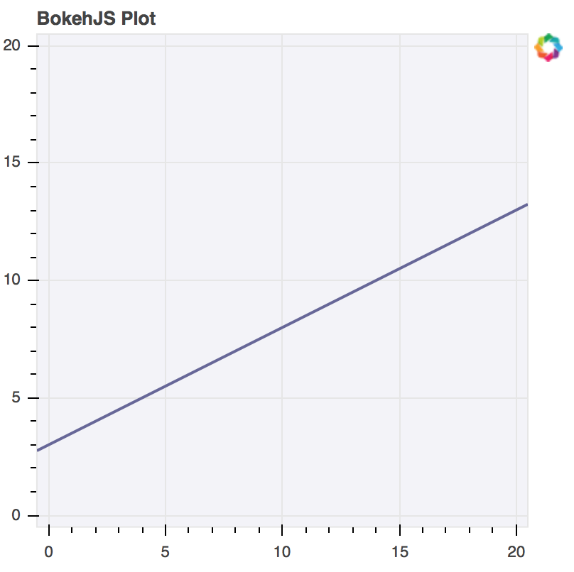
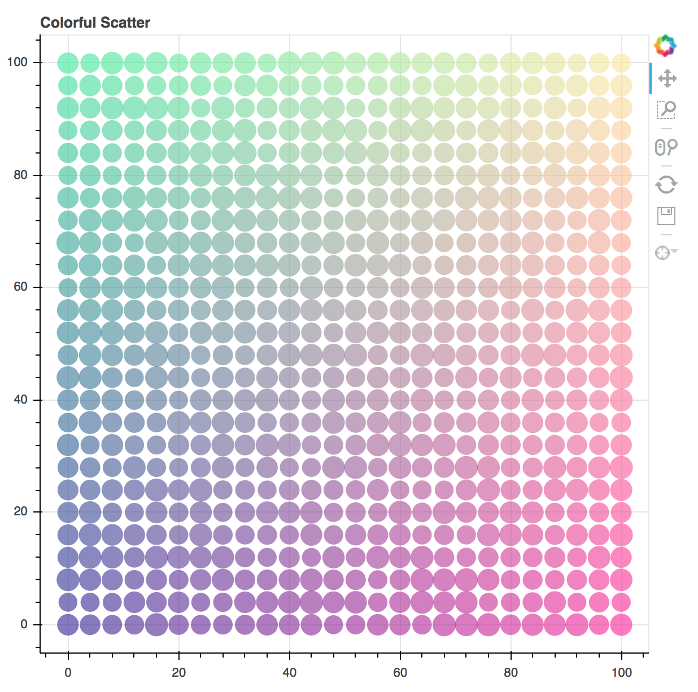

Developing with JavaScript¶
In order to create interactive plots and applications in the browser, Bokeh has a client-side library, BokehJS, to do all the work of drawing and rendering and event handling in a browser. The Bokeh Python library, and libraries for Other Languages such as R, Scala, and Julia, are primarily a means to interact with BokehJS conveniently at a high level, without needing to explicitly worry about JavaScript or web development. However, BokehJS has its own API, and it is possible to do pure JavaScript development using BokehJS directly. Additionally, Extending Bokeh with custom models typically requires interacting with BokehJS directly as well.
Warning
The BokehJS APIs are new as of version 0.12 and may undergo some
changes before a 1.0 release.
Obtaining BokehJS¶
BokehJS is made available via CDN and npm. See the BokehJS Standalone
section of the Installation page for more details.
Low Level Models¶
The low level models for building up plots and applications (e.g. guides and glyphs and widgets, etc.) generally match the Bokeh Python models exactly. Accordingly, the Reference Guide is a primary resource for answering questions about BokehJS models, even though it is presented from a Python perspective.
Unlike the hierarchical organization of the Python library, all of the
JavaScript models are all in one flat Bokeh module. Typically any
Python ClassName is available as Bokeh.ClassName from JavaScript.
The complete list of models available from JavaScript can be seen at
bokehjs/src/coffee/api/models.coffee.
When creating models from JavaScript, all of the keyword arguments that would get passed to the Python object initializer are passed as a JavaScript object. Here is a comparison of how to create a Range1d model. First, in python:
xdr = Range1d(start=-0.5, end=20.5)
and the corresponding JavaScript version:
var xdr = new Bokeh.Range1d({ start: -0.5, end: 20.5 });
This pattern holds in general. Once created, Bokeh model properties are
set in exactly the same way in both languages. To set the end value
to 30 on the Range1d from above, use xdr.end = 30 in either Python
or JavaScript.
As an example, here is an example that creates a plot with axes, grids, and a line glyph from scratch. Comparison with examples in examples/models will show that the translation from Python to JavaScript at this level is nearly one-to-one:
// create some data and a ColumnDataSource
var x = Bokeh.LinAlg.linspace(-0.5, 20.5, 10);
var y = x.map(function (v) { return v * 0.5 + 3.0; });
var source = new Bokeh.ColumnDataSource({ data: { x: x, y: y } });
// create some ranges for the plot
var xdr = new Bokeh.Range1d({ start: -0.5, end: 20.5 });
var ydr = Bokeh.Range1d(-0.5, 20.5);
// make the plot
var plot = new Bokeh.Plot({
title: "BokehJS Plot",
x_range: xdr,
y_range: ydr,
plot_width: 400,
plot_height: 400,
background_fill_color: "#F2F2F7"
});
// add axes to the plot
var xaxis = new Bokeh.LinearAxis({ axis_line_color: null });
var yaxis = new Bokeh.LinearAxis({ axis_line_color: null });
plot.add_layout(xaxis, "below");
plot.add_layout(yaxis, "left");
// add grids to the plot
var xgrid = new Bokeh.Grid({ ticker: xaxis.ticker, dimension: 0 });
var ygrid = new Bokeh.Grid({ ticker: yaxis.ticker, dimension: 1 });
plot.add_layout(xgrid);
plot.add_layout(ygrid);
// add a Line glyph
var line = new Bokeh.Line({
x: { field: "x" },
y: { field: "y" },
line_color: "#666699",
line_width: 2
});
plot.add_glyph(line, source);
// add the plot to a document and display it
var doc = new Bokeh.Document();
doc.add_root(plot);
var div = document.getElementById("plot");
Bokeh.embed.add_document_standalone(doc, div);
The code above generates the following plot:
{kind=link}
Interfaces¶
Similar to the Python Bokeh library, BokehJS provides various higher level
interfaces for interacting with and composing the low level model objects.
These higher level interfaces currently comprise Bokeh.Plotting and
Bokeh.Charts.
Note
The APIs described below are currently part of the bokeh.js file,
however it is likely that in the future these interfaces will be split
into separate files for distribution.
Bokeh.Plotting¶
The JavaScript Bokeh.Plotting API is a port of the Python
bokeh.plotting interface. Accordingly, the information in the
Plotting with Basic Glyphs section of the User Guide can be a useful
reference in addition to the material here.
Here is an example that is very similar the Python example examples/plotting/file/color_scatterplot.py:
var plt = Bokeh.Plotting;
// set up some data
var M = 100;
var xx = [];
var yy = [];
var colors = [];
var radii = [];
for (var y = 0; y <= M; y += 4) {
for (var x = 0; x <= M; x += 4) {
xx.push(x);
yy.push(y);
colors.push(plt.color(50+2*x, 30+2*y, 150));
radii.push(Math.random() * 0.4 + 1.7)
}
}
// create a data source
var source = new Bokeh.ColumnDataSource({
data: { x: xx, y: yy, radius: radii, colors: colors }
});
// make the plot and add some tools
var tools = "pan,crosshair,wheel_zoom,box_zoom,reset,save";
var p = plt.figure({ title: "Colorful Scatter", tools: tools });
// call the circle glyph method to add some circle glyphs
var circles = p.circle({ field: "x" }, { field: "y" }, {
source: source,
radius: radii,
fill_color: colors,
fill_alpha: 0.6,
line_color: null
});
// show the plot
plt.show(p);
The code above generates the following plot:
{kind=link}
Bokeh.Charts¶
The JavaScript Bokeh.Charts API is a high-level interface for
charting that is unique to BokehJS. Generally, it does not share any
similarity to the Python bokeh.charts interface. Currently , there are
two high level charts supported: pie and bar.
Bokeh.Charts.pie¶
To create pie charts using Bokeh.Charts.pie, the basic usage is:
Bokeh.Charts.pie(data, { options })
Where data is a JavaScript object that has labels and
values keys, and options is an object that has any of
the following optional keys:
width: | number — chart width in pixels |
|---|---|
height: | number — chart height in pixels |
inner_radius: | number — inner radius for wedges in pixels |
outer_radius: | number — outer radius for wedges in pixels |
start_angle: | number — start angle for wedges in radians |
end_angle: | number — end angle for wedges in radians |
center: | [number, number] — (x, y) location of the pie center in pixels |
palette: | Palette | Array<Color> — a named palette, or list of colors to colormap the values |
slice_labels: | “labels” | “values” | “percentages” — what the tooltip should show |
By default, plots created Bokeh.Charts.pie automatically add a tooltip
and hover policy. Here is some example code that demonstrates the pie
function, with the plot it generates shown below:
var plt = Bokeh.Plotting;
var pie_data = {
labels: ['Work', 'Eat', 'Commute', 'Sport', 'Watch TV', 'Sleep'],
values: [8, 2, 2, 4, 0, 8],
};
var p1 = Bokeh.Charts.pie(pie_data);
var p2 = Bokeh.Charts.pie(pie_data, {
inner_radius: 0.2,
start_angle: Math.PI / 2
});
var p3 = Bokeh.Charts.pie(pie_data, {
inner_radius: 0.2,
start_angle: Math.PI / 6,
end_angle: 5 * Math.PI / 6
});
var p4 = Bokeh.Charts.pie(pie_data, {
inner_radius: 0.2,
palette: "Oranges9",
slice_labels: "percentages"
});
plt.show(plt.gridplot([p1, p2, p3, p4]));
{kind=link}
Bokeh.Charts.bar¶
To create bar charts using Bokeh.Charts.bar, the basic usage is:
Bokeh.Charts.bar(data, { options })
Where data is a JavaScript array that has as elements lists that are
“rows” from a data table. The first “row” should contain the column headers. H
Here is an example that might represent sales data from different regions for
different years:
var data = [
['Region', 'Year', 'Sales'],
['East', 2015, 23000 ],
['East', 2016, 35000 ],
['West', 2015, 16000 ],
['West', 2016, 34000 ],
['North', 2016, 12000 ],
];
Similar to pie, the options parameter is an object that has any of
the following optional keys:
width: | number — chart width in pixels |
|---|---|
height: | number — chart height in pixels |
stacked: | boolean — whether the bars should be stacked or not |
orientation: | “horizontal” | “vertical” — how the bars should be oriented |
bar_width: | number — width of each bar in pixels |
palette: | Palette | Array<Color> — a named palette, or list of colors to colormap the values |
axis_number_format: | |
| string — a format string to use for axis ticks | |
By default, plots created Bokeh.Charts.b`ar` automatically add a toroltip
and hover policy. Here is some example code that demonstrates the ``ba
function, with the plot it generates shown below:
var plt = Bokeh.Plotting;
var bar_data = [
['City', '2010 Population', '2000 Population'],
['New York City, NY', 8175000, 8008000],
['Los Angeles, CA', 3792000, 3694000],
['Chicago, IL', 2695000, 2896000],
['Houston, TX', 2099000, 1953000],
['Philadelphia, PA', 1526000, 1517000],
];
var p1 = Bokeh.Charts.bar(bar_data, {
axis_number_format: "0.[00]a"
});
var p2 = Bokeh.Charts.bar(bar_data, {
axis_number_format: "0.[00]a",
stacked: true
});
var p3 = Bokeh.Charts.bar(bar_data, {
axis_number_format: "0.[00]a",
orientation: "vertical"
});
var p4 = Bokeh.Charts.bar(bar_data, {
axis_number_format: "0.[00]a",
orientation: "vertical",
stacked: true
});
plt.show(plt.gridplot([p1, p2, p3, p4]));
{kind=link}